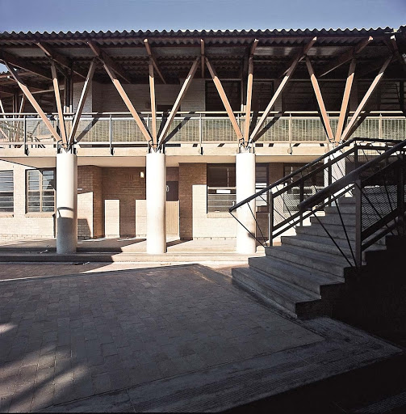

Who are we ?
We are a High School located between the Umfuleni and Khalistha Townships, inside a semi-township known as Drift Sands, which was previously an informal settlement.
What do we do ?
We started off as a primary school, only attending to grades ranging from 1-7, but due to the sudden growth of population we have been forced to accomodate all grades from 1 to matric.